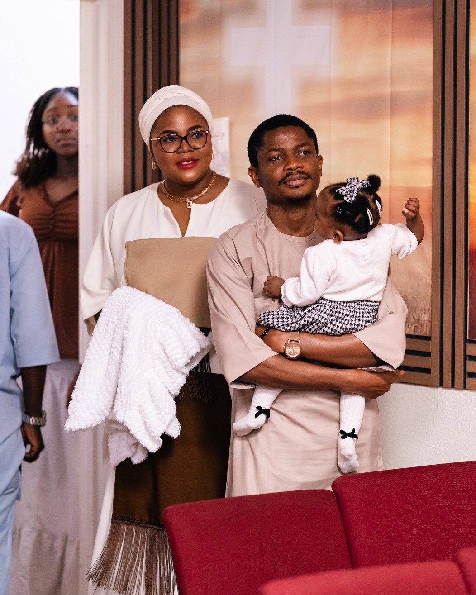

About 90 minutes
Sunday School begins at 10:00 AM and the Hours of Transformation service runs from 10:30 AM to about 12:30 PM. Come for one or both, there's no wrong way to start.
Here's everything you need to know before you walk in: service times, what to wear, where to park, what your kids will love.
A simple, welcoming service. About two hours from start to finish. Worship, teaching from God's Word, prayer, and people genuinely glad you came.
"About 90 minutes of worship and the Word."

"Jeans are welcome. So is your suit."

"Worship that's contemporary and Spirit-filled."
"Bible-centered teaching for the everyday."
Sunday School begins at 10:00 AM and the Hours of Transformation service runs from 10:30 AM to about 12:30 PM. Come for one or both, there's no wrong way to start.
You'll see jeans, traditional African dress, sneakers, and suits side by side. There is no dress code at Jesus House. What matters is that you came.
Our worship band draws from gospel, contemporary, and African worship traditions. Stand, sit, sing along, or just take it in. Every response is welcome.
Pastor Asogba's teaching is rooted in Scripture and aimed at how to live it out Monday through Saturday. You'll leave with something to do, not just something to believe.
Whether they're three or thirteen, we've thought through what they need to feel seen, safe, and excited to come back.
Easy drop-off, big worship, stories that stick.
Children's ministry runs alongside the main service with age-appropriate teaching, songs, and safety protocols. Drop-off and pickup are quick, kids get a matching name tag with their grown-up, and you'll get a note about what they learned. Your kids are in good hands the whole time.

Built for the in-between years.
Middle and high schoolers have their own room, their own leaders, and their own rhythm — not too cool, not too cringe. Real conversations about faith, friendships that hold beyond Sunday, and chances to lead in worship, tech, and outreach from day one.
Free on-site parking is available. Overflow parking is welcome on the surrounding streets. If you need accessibility support, our ushers can meet you at the front entrance.
The main doors face Piercy Road. ADA access is available throughout the building. If you need a hand getting in, message us ahead and an usher will meet you at the curb.
We'll send a short note so you know what to expect. No spam, promise.
Just yourself. A Bible if you'd like to follow along. Scripture verses are projected during the service.
Walk right in. Sundays at Jesus House are about presence, not punctuality. Ushers will quietly help you find a seat.
No. You won't be asked to stand, give, or introduce yourself. You're welcome to just observe.
Absolutely. We livestream every Sunday on YouTube and Facebook. The full archive is on our YouTube channel.
Redeemed Christian Church of God, a global Christian fellowship. Jesus House Silicon Valley is one of its parishes in the Bay Area.
Fill in the connection card above and we'll reach out. From there, ministries, small groups, and serving teams open up depending on what fits your season.
There's no question too small. We'd rather hear from you than have you wonder.